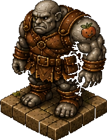
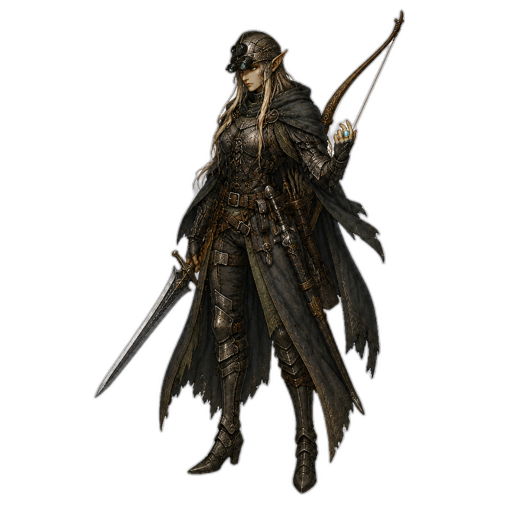
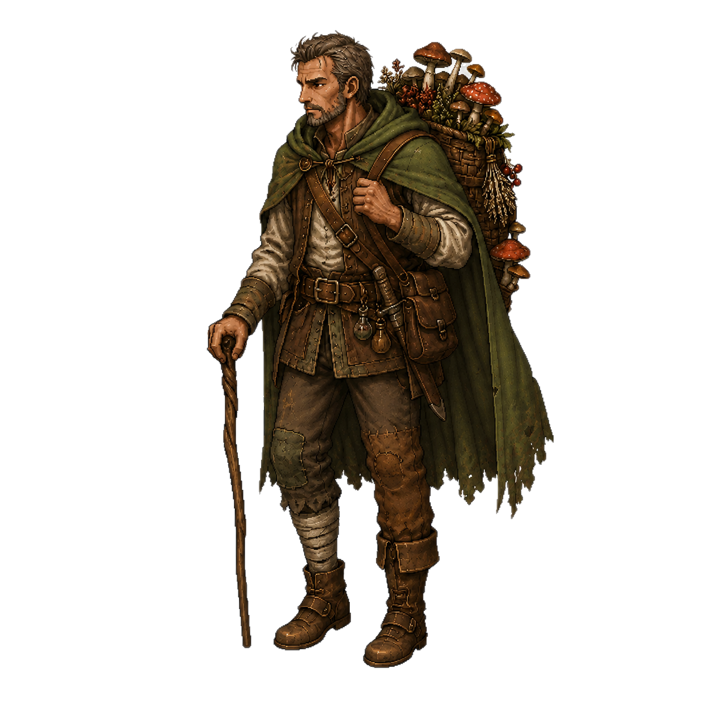
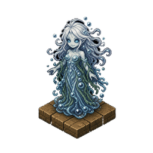

Cena I — A Estalagem da Beira do Pântano
A estalagem range em cada rajada de vento que varre o pântano. A luz das velas vacila, projetando sombras longas sobre as paredes cobertas de musgo. Hobbleboot Sam seca um cálice sujo atrás do balcão enquanto Gregoras Pellos se apoia no batente da porta, os olhos varrendo a sala com cuidado de veterano.

Gregoras Pellos
"As Blackwoods começam a poucas milhas daqui. Quem entrar sem guia não volta. Simples assim."

Hobbleboot Sam
"Já perdi três clientes boa gente lá dentro esse mês. Deixa eu servir uma bebida antes de vocês tomarem qualquer decisão estúpida."

Theron
"Não viemos até aqui para recuar, Sam. Diz o que sabe sobre as Blackwoods e nós te pagamos bem."
Gregoras solta um riso curto e seco. Hobbleboot Sam pousa o cálice devagar, como se avaliasse cada palavra que está prestes a dizer.
Gregoras Pellos
"Coragem. Ou loucura. Ainda não sei qual dos dois você tem. Vamos esperar chegar lá para descobrir."
Cena II — O Acampamento de Mutter Grimmhaar
Além das árvores torcidas, um fogo baixo ilumina a silhueta curvada de Mutter Grimmhaar. A bruxa olha para as brasas como se lesse o futuro nelas — e talvez realmente o faça. Mac Rónán permanece de costas, ocupado com seus ervas e poções silenciosamente.

Mutter Grimmhaar
"Sangue por sangue, criança. Não há outra moeda que o Pântano aceite. Você tem o que pagar?"
Theron
"Depende do que você precisa. Fala logo, bruxa, não temos a noite toda."

Mac Rónán
"Cuidado com o tom, guerreiro. Ela já transformou homens mais arrogantes do que você em coisas muito menos eloquentes."
Cena III — O Salão do Duque Oswald
O Duque Oswald Thool observa os aventureiros com aquele olhar calculista que parece enxergar além da carne. Ao seu lado, Aelar Eisenlí mantém a postura impecável de quem passou anos em serviço de corte, enquanto Finn Willowheel circula pela sala fingindo examinar os tapetes.

Duque Oswald Thool
"Impressionante. Vocês chegaram até aqui. A maioria morre no segundo corredor. Talvez sejam realmente úteis."

Aelar Eisenlí
"Milorde, talvez devêssemos verificar as credenciais antes de fazer promessas. Aventureiros são... variáveis."
Theron
"Nossas credenciais estão no fio da espada. Com todo o respeito, Milorde, diz o que precisa de nós."

Finn Willowheel
"Gosto desse. Direto ao assunto. Sabe o que isso significa, Oswald? Significa que ele ou é muito corajoso ou é muito burro. De qualquer forma, perfeito pra missão."
Cena IV — As Ruínas de Choir
A névoa se adensar entre as pedras negras. Choir, o necromante, materializa-se da escuridão como se fosse parte dela. Ruzalka emerge do poço próximo, a água escorrendo de seus cabelos sem que ela pareça notar o frio.

Choir
"Os mortos aqui me contaram sobre vocês. É curioso... eles ficaram com muito mais medo de você do que você deveria ter deles."

Ruzalka
"As águas falam também. Dizem que você carrega um peso que não é seu. Isso pode te afogar antes de qualquer lâmina."
Theron
"Não sou afogado facilmente. E prefiro que os mortos fiquem quietos."
Choir inclina a cabeça num ângulo impossível para um ser vivo e sorri. Fariborz aparece das sombras à direita, as chamas nos nós dos dedos pulsando com a intensidade de sua atenção.

Fariborz
"O fogo que carrego queimou cidades inteiras. O que você carrega, guerreiro? Só aço? Então você não tem o suficiente para o que vem aí."
Theron
"Então é melhor eu descobrir o que tenho antes de virar cinzas. Onde está o que viemos buscar?"
O silêncio que se segue é pesado. Depois, Fariborz aponta para o corredor mais escuro das ruínas, onde nem a luz de suas chamas parece alcançar.